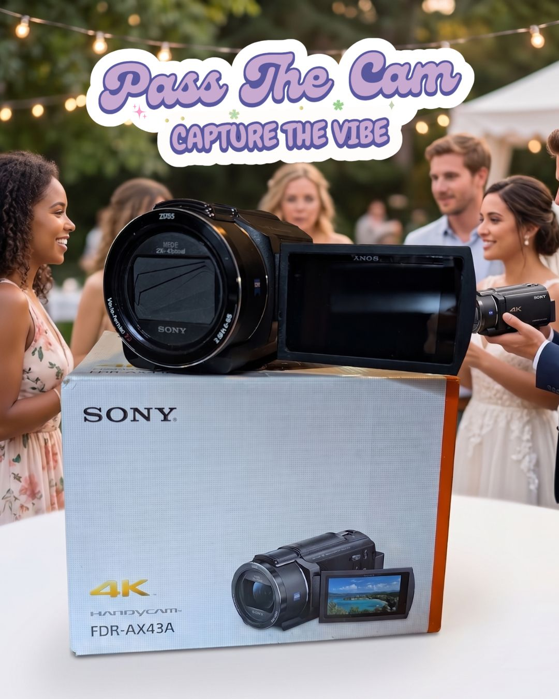

Your celebration, through the eyes of the people who love you most
We help you capture your celebration from the perspective of the people who love you most. We provide high-end 4K camcorders for weddings, graduations, and birthdays so your guests can step behind the lens.
It's a great way to DIY your event video or add a candid touch to your professional photography package — no hired videographer required, just the people already in the room. Proudly based in and serving Rhode Island.
Why Pass The Cam
Guest's-Eye View
The best moments of your event often happen when no professional camera is pointed at them. We put a camera in your guests' hands so nothing gets missed.
Pro-Grade Gear
Sony 4K Handycams and Fujifilm Instax Wide cameras — the same gear real videographers reach for, made simple enough for anyone to use.
Zero Hassle
We ship your gear right to your door and include a prepaid return box, so all you have to do is press record and pass it along.